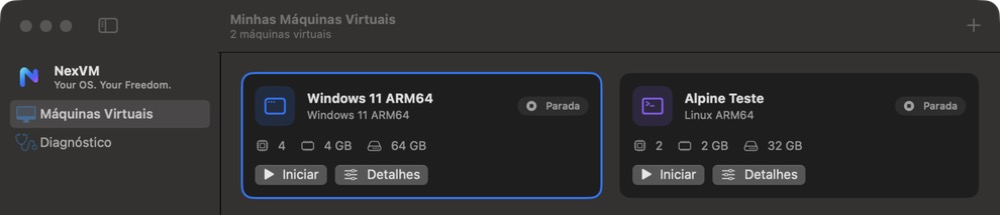

Windows 11 ARM64
Instalador oficial da Microsoft com TPM 2.0 (swtpm) e Secure Boot. Sem atalhos: o NexVM não burla requisitos nem ativação.
Open source · MIT · Apple Silicon
NexVM é um gerenciador de máquinas virtuais gratuito e de código aberto para Macs Apple Silicon. Usa QEMU com aceleração HVF. Sem telemetria, sem contas, sem servidor próprio, funciona offline.

Instalador oficial da Microsoft com TPM 2.0 (swtpm) e Secure Boot. Sem atalhos: o NexVM não burla requisitos nem ativação.
Instala, reinicia pelo disco e desliga via ACPI. Testado com Alpine Linux.
A tela da VM aparece na própria janela, com teclado, mouse, rolagem e tela cheia.
Sem telemetria, sem contas, sem portas públicas. Logs ficam no seu Mac. O código está aberto para você auditar.
App SwiftUI com tema claro e escuro, uma janela por VM e interface em português (Brasil e Portugal) e inglês.
Cada VM é um pacote .nexvm com disco e configuração. Apagar dados sempre pede confirmação.
Baixe o .dmg abaixo e arraste o NexVM para a pasta Aplicativos.
O NexVM não inclui o QEMU. Com o Homebrew:
brew install qemu swtpmO swtpm é necessário para Windows 11 (TPM 2.0).
Baixe a ISO do Windows 11 ARM64 no site da Microsoft (é preciso ter uma licença válida) ou de uma distribuição Linux ARM64, e use o assistente de nova máquina.
Windows 11 também exige um firmware UEFI com Secure Boot, que você instala por conta própria. Veja os detalhes na documentação de compatibilidade.
Só listamos como pronto o que foi testado de verdade.
Acompanhe os testes em docs/compatibility.
Versão de teste (preview), assinada com Developer ID e notarizada pela Apple. Para Macs Apple Silicon com macOS 14 ou superior.
Baixar a última versão (.dmg)O arquivo fica nas Releases do GitHub, junto com o checksum SHA-256. Quer compilar você mesmo? Veja o guia de build.
Sim. O NexVM é open source sob licença MIT. Não existe versão paga, assinatura nem conta.
Sim. Você baixa a ISO da Microsoft e usa a sua própria licença. O NexVM não distribui o Windows, não fornece chaves e não burla ativação nem requisitos do sistema.
Não. Não há telemetria nem rede própria. Os logs ficam apenas no seu Mac.
Não. O foco é Apple Silicon, rodando sistemas ARM64 com aceleração do hipervisor da Apple.
Não. Windows é marca da Microsoft, macOS e Apple Silicon são marcas da Apple, e QEMU é um projeto independente. O NexVM é um projeto independente que usa o QEMU.